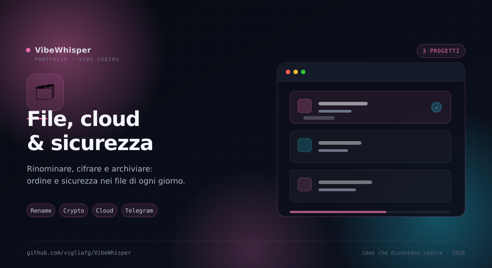

🗂️
File, cloud & sicurezza
Rinomina, cifratura e cloud personale: gli strumenti che mettono ordine e sicurezza nei file di ogni giorno.
3
Progetti
17
Regole di rinomina
3
Algoritmi di cifratura
2 GB
Upload per file
Sezione 06 · File
Ordine, privacy, archiviazione
Tre progetti per il lavoro quotidiano sui file: rinominare in batch senza perdere il controllo, cifrare ciò che deve restare privato e archiviare tutto su un cloud personale.
Come sono collegati
Fili comuni
Ognuno risolve un problema diverso, ma tutti lavorano in locale o su un canale che controlli.
- Bulk Renamer PRO — Mette ordine nei nomi con 17 regole componibili, preview live e undo.
- Cyfer — Protegge i file con AES, DES e 3DES, chiavi generate dal mouse e rilevamento automatico.
- TGM Drive NXT — Archivia i file su canali Telegram, con upload fino a 2 GB e coda trasferimenti.